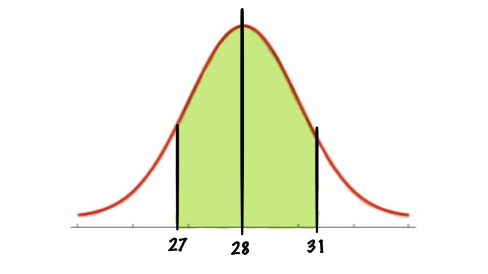

Normal Distributions
Examples
P(a < X < b )
Each month, an American household generates an average of 28 pounds of newspaper for garbage or recycling. Assume the variable is approximately normally distributed and the standard deviation is 2 pounds. If a household is selected at random, find the probability of its generating between 27 and 31 pounds per month.

We see that we want
\[P(27<X<31)\]
To do this we will need two z-scores namely the top and bottom bound
\[z_1=\frac{X_1-\mu}{\sigma}=\frac{27-28}{2}=-0.50\]
and
\[z_2=\frac{X_2-\mu}{\sigma}=\frac{31-28}{2}=1.5\]
And hence we have
\[P(27<X<31)=P(-0.5<Z<1.5)=P(Z<1.5)-P(Z<-0.5)\]
And by using our table we find:
\[P(Z<1.5)=0.9332\]
and
\[P(Z<-0.5)=0.3085\]
so
\[P(27<X<31)=P(-0.5<Z<1.5)=P(Z<1.5)-P(Z<-0.5)=0.9332-0.3085=0.6247\]